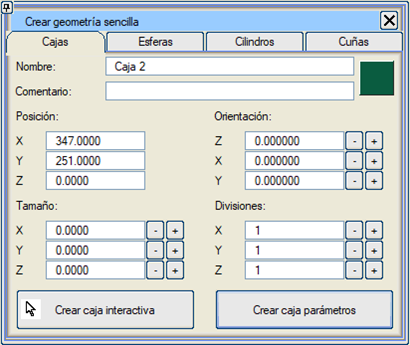
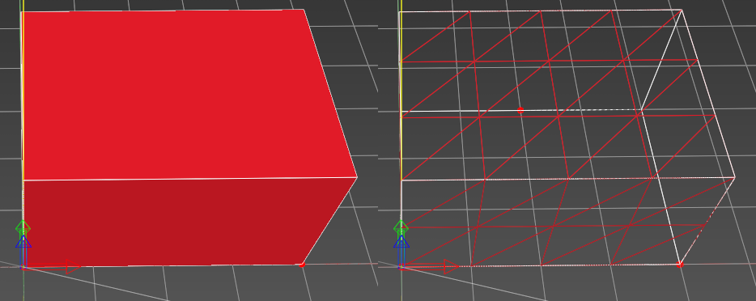

| |
|
Kutu Oluşturma
|
|
Genel Bilgiler Bu menüde herhangi bir boyutta, herhangi bir konumda ve herhangi bir açıda kutular oluşturulabilir. Bir kutu oluşturmak için en azından üç boyutunun da belirlenmesi gerekir. Eğer boyutlar belirlenmez ve başka bir menüye geçilirse, kutu oluşturulmaz.  Seçenekler İsim: kutuyu bir isimle tanımlamayı sağlar. Yorum: bu kutu nesnesine açıklayıcı bir yorum eklemeyi sağlar. Renk: Renk butonu (bu örnekte kırmızı) aracılığıyla kutu için bir renk belirtilebilir. Varsayılan renk rastgeledir. Serbest Yönelim: eğer kutu 3B grafik ortamında tıklanarak oluşturuluyorsa, ilk tıklama ve sürüklemelerin kutunun konumunu ve yönelimini (Z eksenine göre) belirlemek için kullanılacağını gösterir. Izgaraya Dik: kutu grafik ortamından oluşturulurken herhangi bir yönelim belirtilmez, sadece konum ve boyut belirlenir. Konum (X, Y, Z): kutunun tam konumunu belirtir. Eğer 3B grafik ortamında oluşturulursa, ilk tıklamaya karşılık gelen değerlerle doldurulur. Yönelim (X dönüşü, Y dönüşü, Z dönüşü): kutunun her bir eksen etrafındaki dönüşünü belirtir. Dönüşler Z->X->Y sırasında uygulanır. Z ekseni etrafındaki dönüş (azimut, heading) -400º ile 400º arasında değerler alır. X ekseni etrafındaki dönüş (pitch) -360º ile 360º arasında değerler alır. Y ekseni etrafındaki dönüş (roll) -360º ile 360º arasında değerler alır. Sahneden Kot Al: eğer kutu 3B grafik ortamından oluşturuluyorsa, kutunun sahnedeki nesnelerin üzerine oturacağını belirtir. Mevcut Kotu Kullan: kutu 3B grafik ortamından oluşturulurken, konuma Istram'ın "Mevcut Kotu"na karşılık gelen kot atanır. Boyut (X, Y, Z): kutunun tam boyutunu belirtmeyi sağlar. Eğer 3B grafik ortamında oluşturulursa, 3B oluşturma işlemine karşılık gelen değerlerle doldurulur. Boyutlar belirlendiğinde kutu nesnesi oluşturulmuş olur. Başka bir kutu oluşturmak için "Kutu Oluştur" butonuna tekrar basılmalıdır. Bölüntüler (X, Y, Z): kutunun daha gerçekçi bir aydınlatmaya sahip olmasını sağlamak için kutunun yüzeylerini ızgaralara bölmek için kullanılır. Pivot seçenekleri, kutunun hangi noktasının konum koordinatlarına yerleştirileceğini belirtir. Bu nokta şunlar olabilir: -Sınırlayıcı kutunun taban merkezi. -Sınırlayıcı kutunun merkezi. -Sınırlayıcı kutunun minimum koordinatları (varsayılan seçenek). -Minimum koordinatlara göre göreli pivot (X, Y, Z). Sınırlayıcı kutunun minimum koordinatları olarak sol alt köşe alınır. "Kutu" nesnelerinde "sınırlayıcı kutu" tam olarak kendileriyle çakışır. Kullanıcı tanımlı bir pivot belirtilirken, bu işlem sınırlayıcı kutunun köşesine göre göreli öteleme koordinatları (X, Y, Z) girilerek veya nesne üzerine tıklanarak yapılabilir. Bu durumda, ya "Pivotu taşı, geometriyi koru" seçeneği işaretlenerek pivot taşınabilir ya da "Minimum koordinatları taşı, pivotu koru" seçeneği ile geometrinin iç koordinatları değiştirilerek geometri taşınabilir.  Resimde şu parametrelere sahip bir kutu gösterilmektedir: boyut X=4, Y=3, Z=2 ve bölüntüler X=4, Y=3, Z=2. |